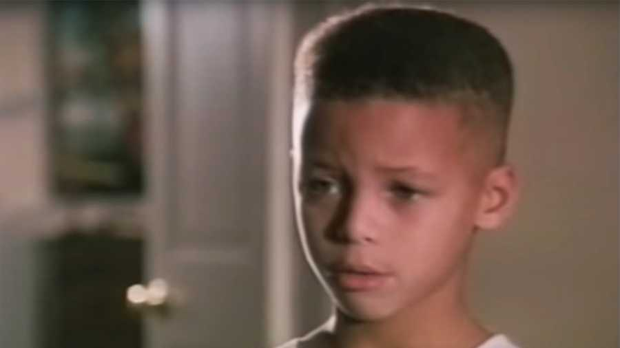
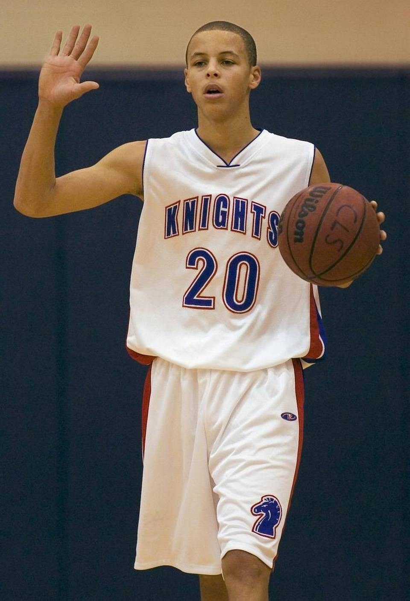
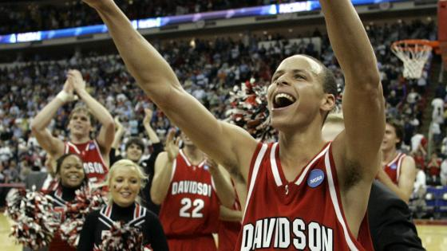
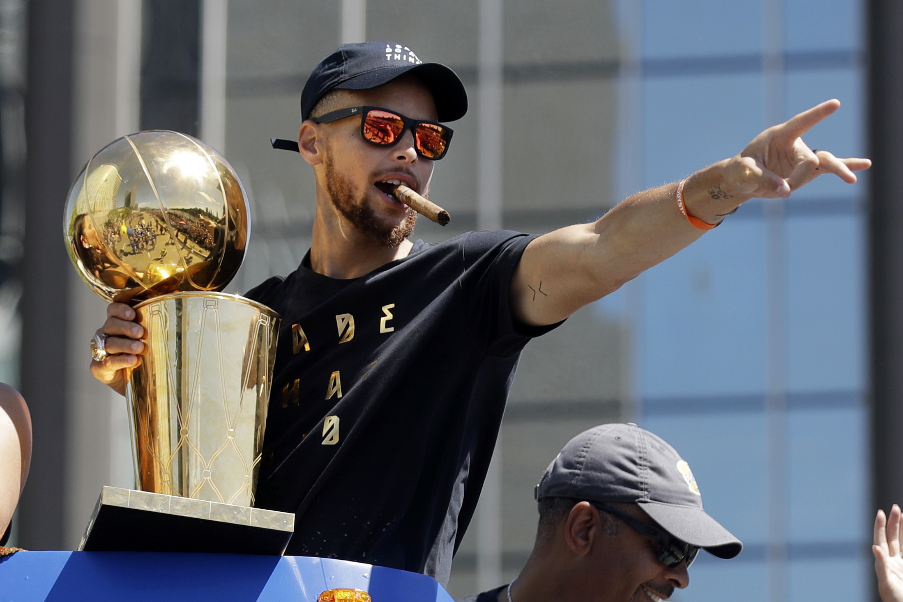

Wardell Stephen Curry was born on March 14th, 1988 in Akron, Ohio. Becoming the first born of Sonya and Dell Curry, Dell being a former NBA player. Steph was rasied in Charlotte, North Carolina, where his dad was spending most if his NBA career with the Charlotte Hornets.
Heading into his sophmore year of highschool, Stephen Curry stood at a measely 5'6, 130 lbs, still shooting the basketball from his waist. Due to his size and small stature, by his senior year in highschool Stephen Curry wasn't offered a single offer from any of the major division 1 schools, his own fathers alma mater (Virginia Tech) would only offer him a spot but even they said he would have to walk on. Steph would continue to play his game and waited for the right college and right coachto make themselves known that they wanted him. Soon a small liberal arts school and their coach, Bob Mckillop, would open up and recruit Curry, thats school was Davidson.
In his first college basketball game he started against Eastern Michigan. In the first half he had 9 turnovers and they were down 18 points, giving his coach second thoughts on putting him in the starting lineup. Putting him back into the second half Stephen Curry would win his first college game. Next game he scored 32 against Michigan. But the best would yet to come for Wardell, in his sophmore year of college he would grow to his current height of 6 foot 3. In the NCAA tournement he would go on to score 40 against Gonzaga and 30 on Georgetown, averaging 32 points during Davidson miraculous run into the elite eight. During 2008 and his junior year in college, Stephen Curry would lead the nation in scoring with 29 points per game. At the end of his junior season with Davidson he decided that he wouldn't be coming back for his senior season, instead declaring for the 2009 NBA Draft.
"Stephen Curry, 6'3 185lbs, position: Point Guard. Stephen's explosiveness and athleticism are below standard, he is not a great finisher around the basket, he needs to considerably improve as a ball handler, often struggles against physical defenders, Stephen must develop as a point guard in order to make it in the league, he will have limited success at the next level. Do not rely on him to run your team."- 2009 Draft Report
In his rookie season he places second in the rookie of the year voting, but would face chronic right ankle problems which would for him to miss 48 games for the next two seasons.Although with these huge set back Stephen Curry wouldn't let this stop him. Led by his competitive and determined nature, Stephen Curry would become an all-time great.
And the rest is history.
Accomplishments:
3x NBA Champion
1st All-time in 3-pointers made in NBA History
2x MVP
Only unanimous MVP in league history
8x NBA all-star